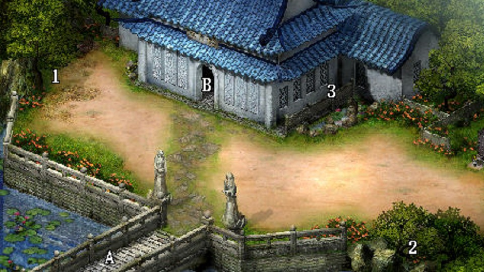

羅剎洞
- [撿] 紫菁玉蓉膏、天仙玉露。不理神仙茶寶箱躲土怪。
- [敵] 羅剎鬼婆：裝上木劍，按 A
盛漁村
- 領苗人 500 文錢和客棧櫃台 200 文錢 (700)
- 桂花酒給酒劍仙之後不理嬸嬸直接出去
- 市場跟水生叔對話後按上觸發張四對話就可以觸發神速香蘭
- 李大娘病倒劇情後與小虎對話
- 洪大夫家領靈山仙芝，並按 END 加快購買十里香。(700 - 640 = 60)
- 離開前拿左方櫃子 200 文錢
(60 + 200 = 260)
仙靈島 (水月宮外)

- 一夜過去後水月宮旁箱子拿完止血草，多點一下空箱子準備開始 UBW
- 點十里香並按住 R 緩速用紫金丹取消拿苗刀至少 17 把
(極限 29 把，但拿滿耗時)